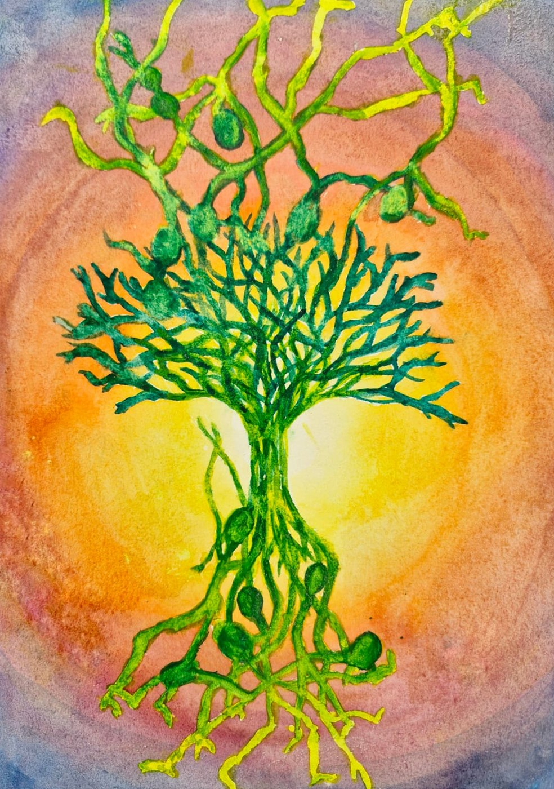
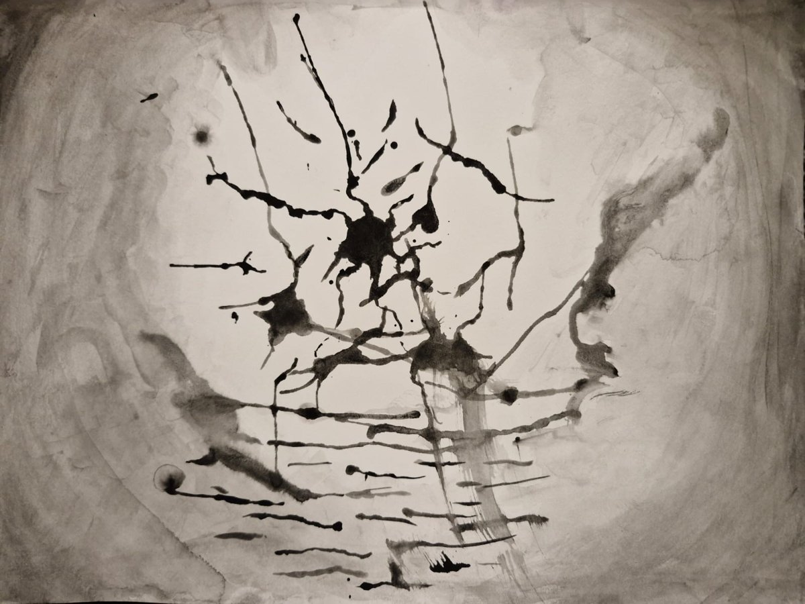
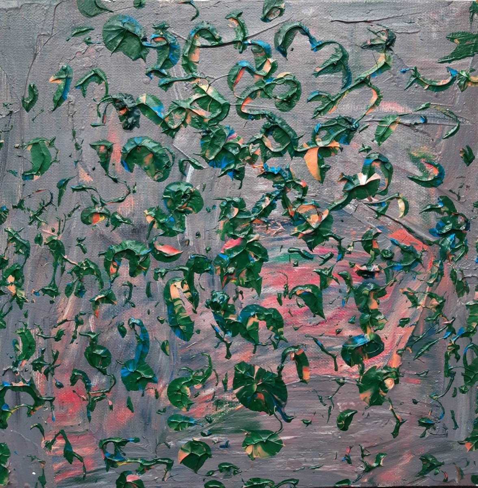
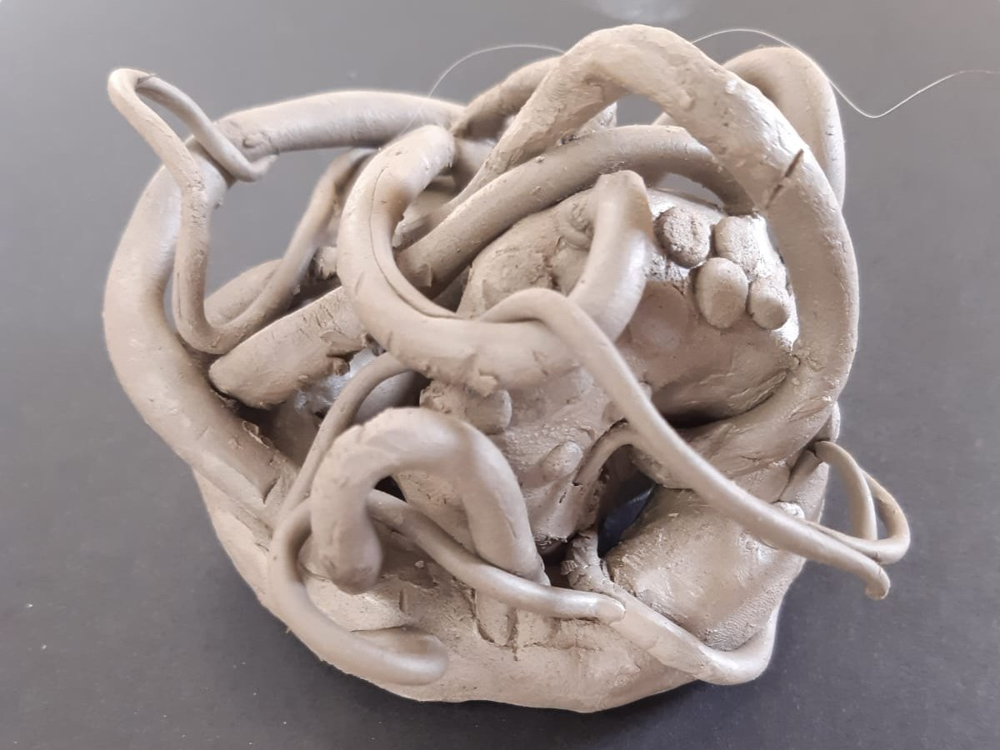

Therapy groups
Small, closed art psychotherapy groups where members explore experiences at their own pace, with the artwork as a shared focus.
About the groupsArt psychotherapy in Glasgow
Art psychotherapy groups and sessions offering a safe, unhurried place to explore feelings, relationships and experiences through art-making. No art experience is necessary and you don't need to be good at art.

Small, closed art psychotherapy groups where members explore experiences at their own pace, with the artwork as a shared focus.
About the groupsGroups delivered on a sessional basis with charities and community services, or written into their funding applications.
How this worksOne-to-one art psychotherapy for adults is planned for the future. Young people aged 14 and over may also be considered, after an initial conversation with the young person and their parent or carer together. Get in touch if you'd like to hear when places open.
Contact meIn art psychotherapy, the making comes first. Paint, pencil, clay and collage give shape to things that can be hard to say.



The name comes from how I work. In therapy, wondering means taking a curious, "not knowing" stance: staying open about what is going on in our own minds and in other people's, instead of rushing to conclusions. I'm not the expert on you or your life. Instead, we think it through together, to find meaning that feels right for you and consider how you might move forward.
In art psychotherapy, the image gives us something to wonder about together. It sits between us, so feelings, whether about life now or experiences from the past, can be looked at from a little distance, in your own time.
"Spaces" is plural because these spaces happen in different places, with different groups, wherever the work is needed.